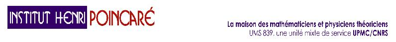

A workshop of the Trimester
Time at Work
Recent and future developments in Hamiltonian Systems: theory and applications
I
nstitut
H
enri
P
oincaré
,
Paris, May 24-27, 2005
ORGANIZERS
Giovanni Forni
, Northwestern University, Department of Mathematics
e-mail
Rafael de la Llave
, The University of Texas at Austin, Department of Mathematics, Austin, USA
e-mail
Carlangelo Liverani
, Department of Mathematics, University of Rome "Tor Vergata", Rome, Italy,
e-mail
SPONSORED BY
I.A.M.P.
C.N.R.S.
G.D.R.E. GREFI-MEFI
I.H.P.
SPEAKERS
AND
PROGRAM
REGISTRATION AND PRACTICAL INFORMATIONS:
visit the
IHP Webb site
.